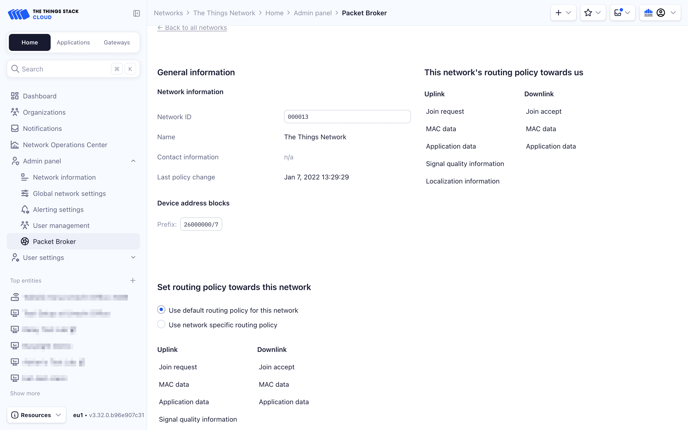
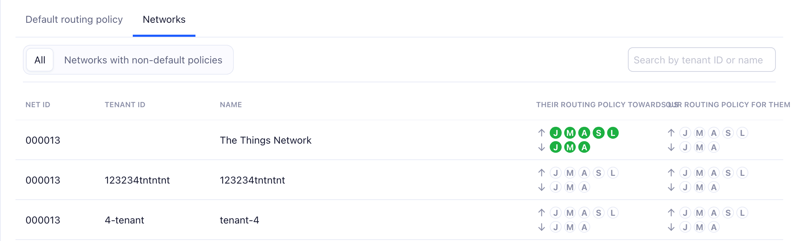
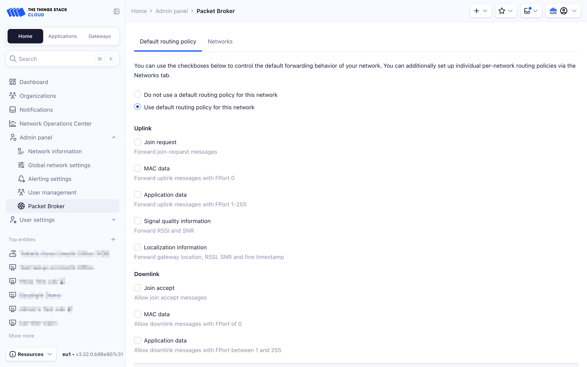

Routing Policies
Routing policies define the rules that Forwarders configure for routing messages to Home Networks.
Routing policies are peer-to-peer: a Forwarder can define policies with each individual Home Network. Forwarders can also define an optional default routing policy that is used as a fallback when no specific policy is defined. Learn more about routing policies.
Packet Broker Router uses a cache of the routing table. It takes up to 10 minutes for changes in routing policies to be fully propagated and effective. ☕
Configure Default Routing Policy
To configure a default routing policy, check the Use default routing policy for this network radio button in the Default routing policy tab. This routing policy will be used when no specific routing policy has been configured with a network.
Choose which uplink and downlink messages you would like to exchange with other networks by default, by enabling the appropriate checkboxes.

The default routing policy defines rules for all Home Networks if there is no specific routing policy for a Home Network.
Get Default Routing Policy
To get the default routing policy:
ttn-lw-cli packetbroker home-networks policies get default
If there is no default policy defined, the above command fails with not found.
Example output
The following example has all message types enabled:
{
"updated_at": "2021-03-24T19:59:48.590521Z",
"uplink": {
"join_request": true,
"mac_data": true,
"application_data": true,
"signal_quality": true,
"localization": true
},
"downlink": {
"join_accept": true,
"mac_data": true,
"application_data": true
}
}
Set Default Routing Policy
To set the default routing policy to forward all uplink traffic and allow Home Networks to forward all downlink traffic:
ttn-lw-cli packetbroker home-networks policies set default --all
To customize, see Flags below.
Delete Default Routing Policy
To delete the default routing policy:
ttn-lw-cli packetbroker home-networks policies delete default
List Home Networks
In order to configure routing policies with Home Networks, you need to know which Home Networks are available in Packet Broker.
To list Packet Broker Home Networks:
ttn-lw-cli packetbroker home-networks list
This shows only the Home Networks that have been set to be visible to other networks.
Example output
[
{
"id": {
"net_id": 19,
"tenant_id": "ttn"
},
"name": "The Things Stack Sandbox",
"dev_addr_blocks": [
{
"dev_addr_prefix": {
"dev_addr": "260B0000",
"length": 16
},
"home_network_cluster_id": "ttn-eu1"
},
{
"dev_addr_prefix": {
"dev_addr": "260C0000",
"length": 16
},
"home_network_cluster_id": "ttn-nam1"
},
{
"dev_addr_prefix": {
"dev_addr": "260D0000",
"length": 16
},
"home_network_cluster_id": "ttn-au1"
}
],
"contact_info": [
{
"contact_type": "CONTACT_TYPE_TECHNICAL",
"contact_method": "CONTACT_METHOD_EMAIL",
"value": "ops@thethingsnetwork.org"
}
]
},
{
"id": {
"net_id": 8
},
"name": "KPN",
"dev_addr_blocks": [
{
"dev_addr_prefix": {
"dev_addr": "10000000",
"length": 7
}
}
]
}
]
Configure Network Specific Routing Policy
To configure a routing policy with a specific network, navigate to the Networks tab.
All networks that are publicly listed will be shown when the All tab is activated. To list only networks with a configured policy, click the Networks with non-default policies tab.

To configure a routing policy for a specific network, first select the network. Activate the Use network specific routing policy radio button.
Here, you may choose which uplink and downlink messages you would like to exchange with this network.

Click the Save routing policy button to store the routing policy.
List Forwarder Routing Policies
You can see which routing policies Forwarders set for your network as the Home Network. This allows you to see from which networks you receive traffic, which data is being routed, and what downlink capabilities you have with those Forwarders.
To list the routing policies set by Forwarders for your network:
ttn-lw-cli packetbroker forwarder policies list
Example output
The following example shows that The Things Stack Sandbox forwards all messages to your network (NetID 000013 and tenant ID my-company) and that you can send all downlink messages via The Things Stack Sandbox to your end devices.
[
{
"forwarder_id": {
"net_id": 19,
"tenant_id": "ttn"
},
"home_network_id": {
"net_id": 19,
"tenant_id": "my-company"
},
"updated_at": "2021-03-23T15:14:49.614025Z",
"uplink": {
"join_request": true,
"mac_data": true,
"application_data": true,
"signal_quality": true,
"localization": true
},
"downlink": {
"join_accept": true,
"mac_data": true,
"application_data": true
}
}
]
Home Network Routing Policies
You can manage the routing policies between you as Forwarder and any Home Network available in Packet Broker. This allows you to configure what uplink traffic is routed where, and to which extent those Home Networks can use your gateways for downlink traffic.
Home Network routing policies take precedence over the default routing policy.
List Home Network Routing Policies
To list the routing policies for Home Networks:
ttn-lw-cli packetbroker home-network policies list
Get Home Network Routing Policy
To get the routing policy for a Home Network:
ttn-lw-cli packetbroker home-networks policies get <net-id> [<tenant-id>]
Replace <net-id> with your network’s NetID. The tenant-id is optional and represents the tenant within the NetID.
To view the routing policy configured between you (the Forwarder) and The Things Stack Sandbox (the Home Network):
ttn-lw-cli packetbroker home-networks policies get 000013 ttn
Set Home Network Routing Policy
To set the routing policy for a Home Network:
ttn-lw-cli packetbroker home-network policies set <net-id> [<tenant-id>] --all
To customize, see Flags below.
To enable forwarding of all packets between you (the Forwarder) and The Things Stack Sandbox (the Home Network):
ttn-lw-cli packetbroker home-network policy set 000013 ttn --all
Delete Home Network Routing Policy
To delete the routing policy for a Home Network:
ttn-lw-cli packetbroker home-networks policies delete <net-id> [<tenant-id>]
Replace <net-id> with your network’s NetID. The tenant-id is optional and represents the tenant within the NetID.
Flags
When setting a routing policy, you can specify a combination of the following flags:
| Flag | Meaning |
|---|---|
--all |
Enable all message types |
--join |
Enable join-request and join-accept |
--join-request |
Enable join-request |
--join-accept |
Enable join-accept |
--mac-data |
Enable MAC layer data messages (FPort 0) |
--mac-data-up |
Enable MAC layer data uplink messages |
--mac-data-down |
Enable MAC layer data downlink messages |
--application-data |
Enable application layer data messages (FPort 1 or higher) |
--application-data-up |
Enable application layer data uplink messages |
--application-data-down |
Enable application layer data downlink messages |
--signal-quality |
Enable RSSI and SNR metadata (to pick the best downlink path) |
--localization |
Enable signal quality and gateway locations (for geolocation) |